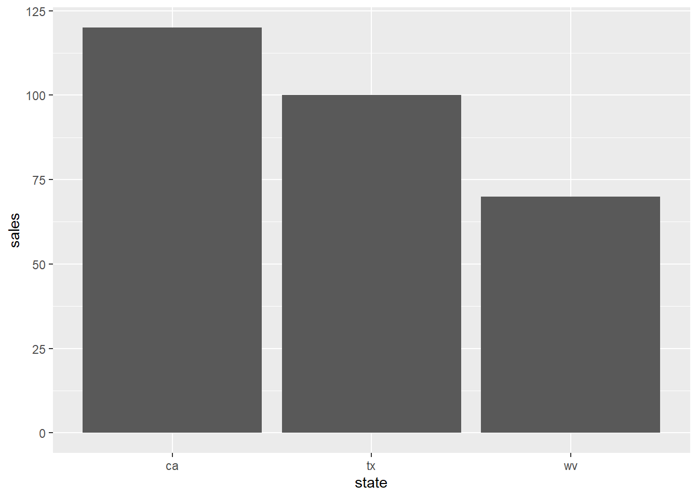
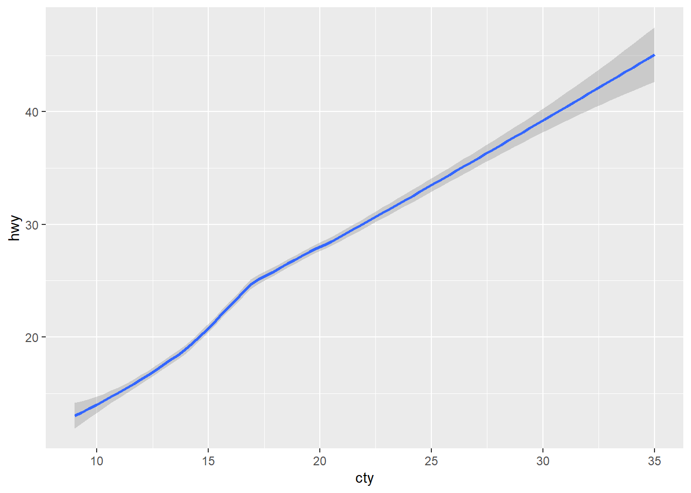
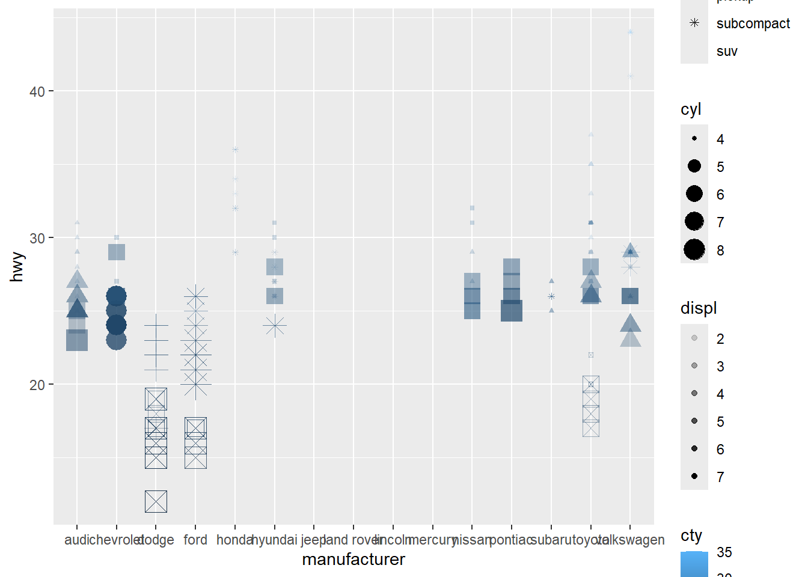

ggplot 1 - introduction
Introduction
ggplot is a super useful graphics tool. See its website at dplyr tutorial
There is also a very nice cheat cheat by Afshine Amidi & Shervine Amidi
Here is a great systematic introduction: Elegant Graphics for Data Analysis
Here is a list of example charts: R Graphics Cookbook
Here is a great step-by-step tutorial: Show the right numbers
Why ggplot?
R has a number of built-in graphical functions. However, they are limited in customizability, and all work a little differently. ggplot is a consistent approach that allows you to build very elegant plots.
Creating a plot
You will eventually load tibbles data from a file, but for now I will usually include them in the file. We are going to use a sample dataset called mpg.
First, call ggplot to start your plot. It’s easiest to
give it the data at this point.
Note that nothing happens. This is because we need to draw stuff on the chart.
ggplot(data = mpg)Geoms for 1-2 variables
There are different types of geoms:
- Individual:
geom_area,geom_col,geom_line,geom_point - Collective:
geom_boxplot,geom_histogram - Maps:
geom_sf
geom_bar
A bar plot will show the count of items at every point in an axis (either x or y).
Note that we use the + to join it to the ggplot.
We need to add a mapping argument to geom_bar, and will use an aesthetic (aes). This allows us to define which parts of the chart will map to our dataset.
Any properties that don’t map to the aes (data set) need
to be placed outside of the mapping argument. See examples below.
Here is a minimal example
# Minimal example
ggplot(data = mpg) +
geom_bar(mapping = aes(y = hwy))
With some options:
- x/y: use either x or y, but not both. The other will be count of rows.
- fill: text of color.
- color: border (text color)
# Example with color/fill
ggplot(data = mpg) +
geom_bar(mapping = aes(x = hwy),
color = 'blue',
fill = 'black')
geom_smooth
The smooth geom shows a smoothed line. It shows the average value at each point, instead of the bar (which defaults to count).
Note that we need both an X and a Y (numeric).
# Show with error bars
ggplot(data = mpg) +
geom_smooth(mapping = aes(y = hwy, x = cty))## `geom_smooth()` using method = 'loess' and formula = 'y ~ x'# Full example
# method: loess is default for small items. Can also use lm (linear reg)
# color: line color
# linewidth: width for the bar (number)
# se: False to use no error bars (confidence interval around smooth)
# na.rm: T to remove na values with no error
# stat: default is smooth (shows a smoothed line). To show all, use identity.
ggplot(data = mpg) +
geom_smooth(mapping = aes(y = hwy, x = cty),
method = 'lm',
na.rm = TRUE,
stat = 'identity',
se = FALSE,
color = 'green',
linewidth = 3)
geom_line
This is identical to geom_smooth, but defaults to
showing the stat as identity, instead of smooth.
# Show with error bars
ggplot(data = mpg) +
geom_line(mapping = aes(y = hwy, x = cty))geom_point
This shows a separate dot for each row in the dataset (identity)
# Basic example
# x and y: can be either categorical or numerical data
ggplot(data = mpg) +
geom_point(mapping = aes(y = hwy, x = class))
# We have a lot of properties that can be mapped
# shape: best discrete, (suggested max of 6 different items)
# size: continuous value
# alpha: continuous values
# color: either continuous or discrete
ggplot(data = mpg) +
geom_point(mapping = aes(y = hwy,
x = manufacturer,
shape = class,
size = cyl,
color = cty,
alpha = displ))## Warning: The shape palette can deal with a maximum of 6 discrete values because more than 6 becomes difficult to
## discriminate
## ℹ you have requested 7 values. Consider specifying shapes manually if you need that many have them.## Warning: Removed 62 rows containing missing values (`geom_point()`).
# Note that this can also be set manually
# shape: Number, 1-20
# size: Number
# alpha: Number 0-1
# color: Text, such as "black" or a hex code "#2211aa"
ggplot(data = mpg) +
geom_point(mapping = aes(y = hwy,
x = manufacturer),
shape = 2,
size = 3,
color = '#00bb00',
alpha = 0.1)
jitter
Another useful function combined with point is jitter.
This will slightly adjust the values given, making it easier to see
overplotted data.
Use in combination with a low alpha value to see density of points on your plot.
# jitter takes in a variable, and adjusts it by the factor
# Note that it only works with continuous data
ggplot(data = mpg) +
geom_point(mapping = aes(y = jitter(hwy, factor = 1.5),
x = manufacturer),
alpha = 0.1)
Geoms for distributions
geom_histogram
Show the count of items using bins
ggplot(data = mpg) +
geom_histogram(mapping = aes(x = hwy),
binwidth = 5)geom_density
Similar to a histogram, but you can layer different lines on top of each other.
ggplot(data = mpg) +
geom_density(mapping = aes(x =hwy, color = class, fill = class),
alpha = 0.2)geom_boxplot
Show a boxplot for a series of discrete values (usually text)
ggplot(data = mpg) +
geom_boxplot(mapping = aes(x = class, y = hwy))Facets
We can create multiple plots using facets
facet_wrap
Show a separate plot for each categorical data
# Small multiples (facets) are a great technique for exploring categorical data
# and its relationship with continuous data.
#
# Note the ~ symbol. ~ (tilde) is commonly use in lm (regression) to
# show [dependent variable] ~ [independent variable] For now, just
# remember to keep the left blank and put your category variable on the right.
#
# nrow says how many plots to put per row
ggplot(data = mpg) +
geom_point(mapping = aes(x = displ, y = hwy)) +
facet_wrap( ~ class, nrow = 3)facet_grid
Show a grid of charts, using two continuous variables.
# Small multiples (facets) can be used with two separate variables.
# Use facet_grid instead of facet_wrap.
# Use categorical variables.
# Note the ~ uses drv (type of drive-train) and cyl (cylinders)
ggplot(data = mpg) +
geom_point(mapping = aes(x = displ, y = hwy)) +
facet_grid(cyl ~ drv)
Dynamic plots
Plotly can be used to make a plot more dynamic. See its website for more information.